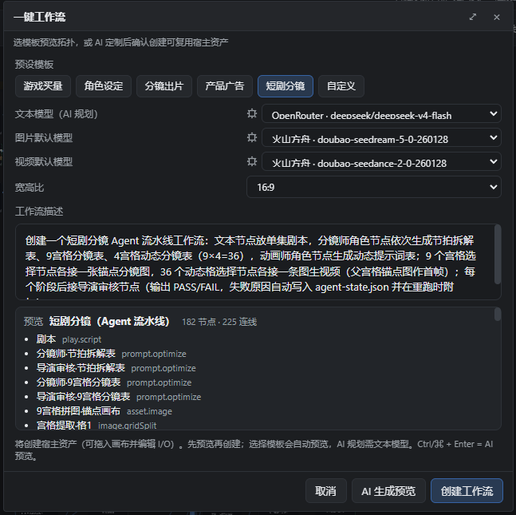
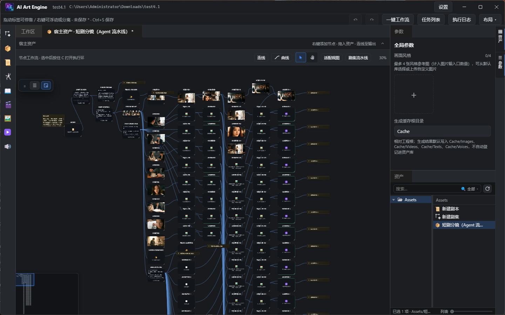
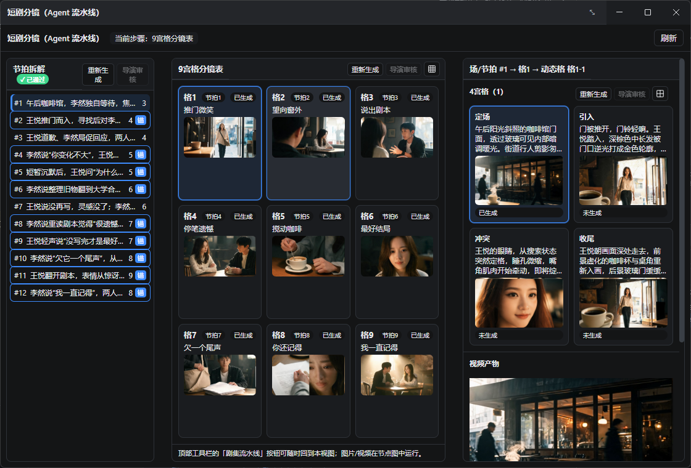

Guide · Short Video
短视频制作教程
三步跑通一条短视频：先用一键工作流的短视频模板自动生成完整节点图，再在 Agent 流程窗口中完成分镜、拼图、导演审核与视频生成，全程无需手动搭节点。
1. 准备
- 模型：设置 → 模型 → 添加并启用提供商（火山方舟、可灵、MiniMax、通义千问、魔塔、 OpenRouter 等）。建议分别勾选并设置默认的文本模型（分镜 / 提示词 / 审核）、 图片模型（拼图与锚点图）与视频模型（动态视频）。
- 对象存储（可选）：设置 → 对象存储 → 启用火山 TOS / 阿里云 OSS / 腾讯云 COS 之一。 视频需要外链或做参考视频时推荐配置；纯本地预览可暂不配置。
- 从首页新建或打开一个工程，进入工作区。
确认提供商账户有足够额度；余额不足时生成会直接失败。
2. 第 1 步：选择短视频模板
- 打开工程后，点击顶栏的一键工作流。
- 在预设模板中选择「短剧分镜（Agent 流水线）」——即短视频模板。
- 点击预览模板查看自动生成的节点与连线拓扑；可先选预设再改“工作流描述”。
- 确认后点击创建工作流，选择保存目录与名称。
- 资产库中出现新的宿主资产，短视频工作流即创建完成。

3. 第 2 步：自动生成的工作流节点
双击宿主资产进入内图，可以看到模板自动生成的完整链路：
- 剧本 → 节拍拆解表（分镜师）→ 9宫格分镜表。
- 9宫格拼图：一个节点生成 3×3 拼图画布，再按格拆出 9 张锚点图并高清放大。
- 4宫格动态分镜表 → 每组 2×2 拼图 → 36 个动态格提取与高清放大。
- 动态提示词表（36 条）→ 动态格选择 → 36 条动态视频。
- 全程穿插 review1~review4 四个导演审核节点（节拍 / 9宫格 / 4宫格 / 动态提示词）。
节点图支持任意微调：改提示词、换模型、重连边。日常使用无需逐个节点手动运行，直接进入第 3 步的 Agent 流程窗口操作即可。

4. 第 3 步：在 Agent 流程窗口完成所有操作
点击顶部工具栏的「剧集流水线」按钮，打开 Agent 流程窗口，之后的生成与审核都在这里完成：
- 节拍拆解（左栏）：先运行重新生成产出节拍表，再点导演审核。
- 9宫格分镜表（中栏）：运行重新生成产出 9 宫格文本；点击右上角 网格图标一次性生成整张 9宫格拼图并拆出全部 9 格；随后导演审核。
- 4宫格（右栏）：运行重新生成；点击2×2 网格图标生成当前组 4宫格拼图；导演审核。右侧可查看动态提示词与视频产物。
- 视频：点生成这条视频（或按需逐条生成），生成后窗口内直接播放预览。
- 三栏之间可拖动分隔条调整宽度，方便同时观察文本与图片。
推荐顺序：节拍拆解 → 9宫格分镜表 → 生成9宫格拼图 → 4宫格动态分镜表 → 生成4宫格拼图 → 动态提示词 →
导演审核逐级 PASS → 生成视频。阶段重新生成后，其下游图 / 视频会自动失效并显示“未生成”，
再次点击生成会从最新文本一致补跑，避免“新文本配旧图”。

5. 常见问题
- 需要哪些模型？文本模型必须（分镜 / 提示词 / 导演审核）；图片模型用于拼图与锚点图； 视频模型用于动态视频。均在 设置 → 模型 中勾选并设默认。
- 视频只显示路径、没有预览？生成完成后流程窗口会自动加载可播放预览；若仍未出现，点击刷新或重新打开流程窗口。
- 导演审核按钮是灰色的？对应阶段“重新生成”成功写回结果后按钮才会点亮，避免审核旧内容。
- 生成失败？先检查模型密钥、默认模型与账户余额；失败原因会显示在任务队列或窗口顶部。